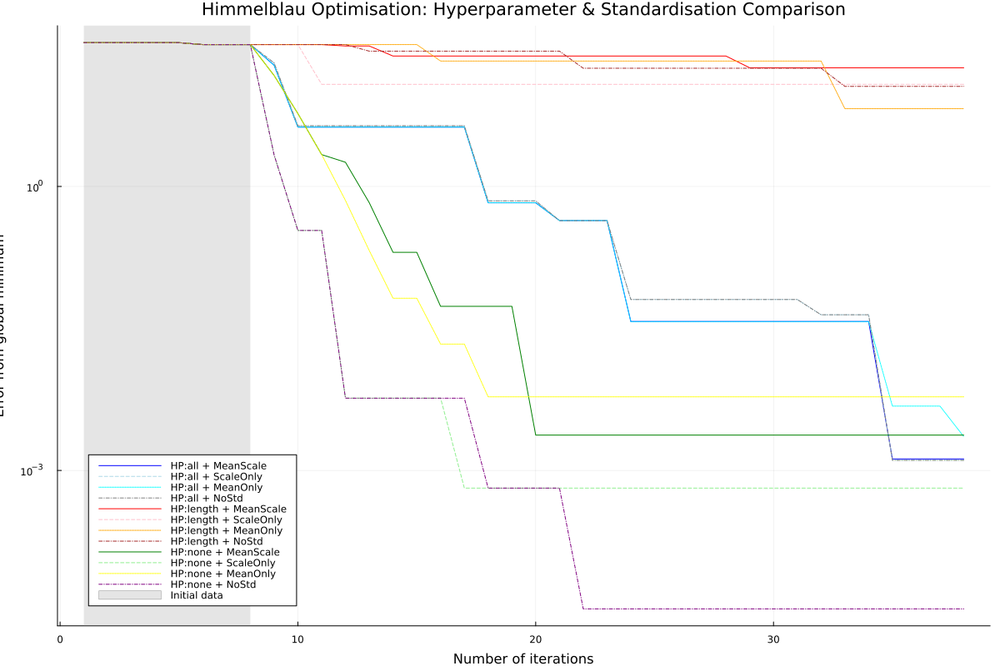

AbstractBayesOpt Tutorial: Hyperparameter Tuning and Standardisation Comparison
This tutorial presents the different options for hyperparameter optimisation and standardisation modes available in AbstractBayesOpt.jl. We will compare the performance of these configurations on gradient-enhanced GPs on the Himmelblau function
Setup
Loading the necessary packages.
using AbstractBayesOpt
using AbstractGPs
using Plots
using ForwardDiff
using QuasiMonteCarlo
using RandomDefine the objective function
We will use the Himmelblau function, a well-known multi-modal test function with four global minima. The function is defined as: $f(x_1, x_2) = (x_1^2 + x_2 - 11)^2 + (x_1 + x_2^2 - 7)^2$
himmelblau(x::AbstractVector) = (x[1]^2 + x[2] - 11)^2 + (x[1] + x[2]^2 - 7)^2
∇himmelblau(x) = ForwardDiff.gradient(himmelblau, x)∇himmelblau (generic function with 1 method)Combined function that returns both value and gradient for our gradient-enhanced GP
f_val_grad(x) = [himmelblau(x); ∇himmelblau(x)]
d = 2
lower = [-6.0, -6.0]
upper = [6.0, 6.0]
domain = ContinuousDomain(lower, upper)Initial Training Data and Model Setup
We'll use a gradient-enhanced Gaussian Process with an approximate Matérn 5/2 kernel. For better space coverage, we generate initial training data using Sobol sampling.
σ² = 1e-12
n_train = 8
x_train = [
collect(col) for
col in eachcol(QuasiMonteCarlo.sample(n_train, lower, upper, SobolSample()))
]8-element Vector{Vector{Float64}}:
[-3.75, -2.25]
[2.25, 3.75]
[5.25, -5.25]
[-0.75, 0.75]
[-2.25, -3.75]
[3.75, 2.25]
[0.75, -0.75]
[-5.25, 5.25]Evaluate function and gradients at training points
y_train = f_val_grad.(x_train)8-element Vector{Vector{Float64}}:
[33.0078125, -23.5625, 52.8125]
[91.5078125, -1.0625, 135.3125]
[794.2578125, 289.1875, -519.4375]
[145.5078125, 14.6875, -40.9375]
[117.0078125, 96.8125, -91.5625]
[31.5078125, 83.3125, 26.9375]
[157.5078125, -44.9375, -5.3125]
[710.2578125, -427.4375, 365.1875]Setup the base model that we'll use across all configurations
base_model = GradientGP(ApproxMatern52Kernel(), d+1, σ²)GradientGP{Float64}(AbstractGPs.GP{AbstractGPs.CustomMean{AbstractBayesOpt.var"#5#7"{Vector{Float64}, AbstractBayesOpt.var"#f_mean#6"}}, gradKernel{KernelFunctions.ScaledKernel{KernelFunctions.TransformedKernel{ApproxMatern52Kernel{Distances.SqEuclidean}, KernelFunctions.ScaleTransform{Float64}}, Float64}}}(AbstractGPs.CustomMean{AbstractBayesOpt.var"#5#7"{Vector{Float64}, AbstractBayesOpt.var"#f_mean#6"}}(AbstractBayesOpt.var"#5#7"{Vector{Float64}, AbstractBayesOpt.var"#f_mean#6"}([0.0, 0.0, 0.0], AbstractBayesOpt.var"#f_mean#6"())), gradKernel{KernelFunctions.ScaledKernel{KernelFunctions.TransformedKernel{ApproxMatern52Kernel{Distances.SqEuclidean}, KernelFunctions.ScaleTransform{Float64}}, Float64}}(Matern 5/2 Kernel, quadratic approximation around d=0 (metric = Distances.SqEuclidean(0.0))
- Scale Transform (s = 1.0)
- σ² = 1.0)), 1.0e-12, 3, nothing)Configuration Setup
We'll compare different combinations of hyperparameter optimisation strategies and standardisation modes. This comprehensive comparison will help us understand how these settings affect optimisation performance.
Hyperparameter Optimisation Strategies:
- "all": Optimise all kernel hyperparameters (length scales, signal variance, etc.)
- "lengthscaleonly": Only optimise the length scale parameters
- nothing: Use fixed hyperparameters (no optimisation)
Standardisation Modes:
- "mean_scale": Remove empirical mean and scale by standard deviation (default)
- "scale_only": Only scale by standard deviation
- "mean_only": Only remove empirical mean, no scaling
- nothing: No standardisation applied
12-element Vector{Tuple{String, Any, Any}}:
("HP:all + MeanScale", "all", "mean_scale")
("HP:all + ScaleOnly", "all", "scale_only")
("HP:all + MeanOnly", "all", "mean_only")
("HP:all + NoStd", "all", nothing)
("HP:length + MeanScale", "length_scale_only", "mean_scale")
("HP:length + ScaleOnly", "length_scale_only", "scale_only")
("HP:length + MeanOnly", "length_scale_only", "mean_only")
("HP:length + NoStd", "length_scale_only", nothing)
("HP:none + MeanScale", nothing, "mean_scale")
("HP:none + ScaleOnly", nothing, "scale_only")
("HP:none + MeanOnly", nothing, "mean_only")
("HP:none + NoStd", nothing, nothing)Running the Optimisation Comparison
We will run Bayesian optimisation with each configuration and collect performance metrics.
problem;
hyper_params=hyper_params,Execute the comparison
Let's run the optimisation with all 12 different configurations. This will take some time as we're testing various combinations of hyperparameter optimisation and standardisation settings.
results = run_comparison(30)Dict{String, NamedTuple} with 12 entries:
"HP:all + NoStd" => (xs = [[-3.75, -2.25], [2.25, 3.75], [5.25, -5.25]…
"HP:length + MeanScale" => (xs = [[-3.75, -2.25], [2.25, 3.75], [5.25, -5.25]…
"HP:none + MeanScale" => (xs = [[-3.75, -2.25], [2.25, 3.75], [5.25, -5.25]…
"HP:none + ScaleOnly" => (xs = [[-3.75, -2.25], [2.25, 3.75], [5.25, -5.25]…
"HP:length + NoStd" => (xs = [[-3.75, -2.25], [2.25, 3.75], [5.25, -5.25]…
"HP:none + MeanOnly" => (xs = [[-3.75, -2.25], [2.25, 3.75], [5.25, -5.25]…
"HP:all + ScaleOnly" => (xs = [[-3.75, -2.25], [2.25, 3.75], [5.25, -5.25]…
"HP:length + ScaleOnly" => (xs = [[-3.75, -2.25], [2.25, 3.75], [5.25, -5.25]…
"HP:all + MeanOnly" => (xs = [[-3.75, -2.25], [2.25, 3.75], [5.25, -5.25]…
"HP:length + MeanOnly" => (xs = [[-3.75, -2.25], [2.25, 3.75], [5.25, -5.25]…
"HP:all + MeanScale" => (xs = [[-3.75, -2.25], [2.25, 3.75], [5.25, -5.25]…
"HP:none + NoStd" => (xs = [[-3.75, -2.25], [2.25, 3.75], [5.25, -5.25]…Results Analysis and Visualisation
Create and display the convergence plot
This comprehensive plot shows the optimisation performance of all 12 configurations. Each line represents a different combination of hyperparameter optimisation and standardisation.
This page was generated using Literate.jl.